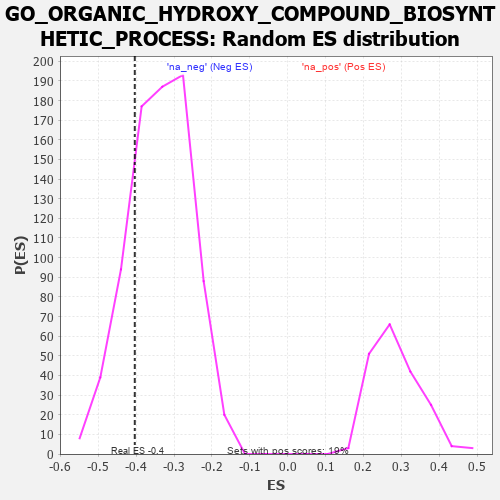

| | | Dataset | 7d |
| Phenotype | NoPhenotypeAvailable |
| Upregulated in class | na_neg |
| GeneSet | GO_ORGANIC_HYDROXY_COMPOUND_BIOSYNTHETIC_PROCESS |
| Enrichment Score (ES) | -0.40379688 |
| Normalized Enrichment Score (NES) | -1.1967643 |
| Nominal p-value | 0.20843673 |
| FDR q-value | 0.63935304 |
| FWER p-Value | 1.0 |
Table: GSEA Results Summary
 Fig 1: Enrichment plot: GO_ORGANIC_HYDROXY_COMPOUND_BIOSYNTHETIC_PROCESS
Fig 1: Enrichment plot: GO_ORGANIC_HYDROXY_COMPOUND_BIOSYNTHETIC_PROCESS
Profile of the Running ES Score & Positions of GeneSet Members on the Rank Ordered List
| PROBE | GENE SYMBOL | GENE_TITLE | RANK IN GENE LIST | RANK METRIC SCORE | RUNNING ES | CORE ENRICHMENT | | 1 | INSM1 | | | 250 | 0.939 | 0.0171 | No |
| 2 | P2RY1 | | | 1416 | 0.407 | -0.1088 | No |
| 3 | IDI1 | | | 1513 | 0.389 | -0.1008 | No |
| 4 | NFYB | | | 1543 | 0.384 | -0.0845 | No |
| 5 | NFYC | | | 1582 | 0.377 | -0.0697 | No |
| 6 | DHDDS | | | 1850 | 0.328 | -0.0864 | No |
| 7 | REST | | | 2308 | 0.259 | -0.1307 | No |
| 8 | LBR | | | 2395 | 0.246 | -0.1288 | No |
| 9 | AGK | | | 2752 | 0.191 | -0.1638 | No |
| 10 | PCK2 | | | 2823 | 0.180 | -0.1633 | No |
| 11 | ARV1 | | | 2827 | 0.179 | -0.1544 | No |
| 12 | WNT4 | | | 3023 | 0.146 | -0.1714 | No |
| 13 | ACLY | | | 3149 | 0.130 | -0.1805 | No |
| 14 | GCH1 | | | 3166 | 0.127 | -0.1759 | No |
| 15 | CNBP | | | 3728 | 0.037 | -0.2448 | No |
| 16 | IPMK | | | 3846 | 0.021 | -0.2584 | No |
| 17 | DGKQ | | | 3856 | 0.020 | -0.2585 | No |
| 18 | VPS35 | | | 3989 | -0.006 | -0.2749 | No |
| 19 | HDC | | | 4018 | -0.011 | -0.2779 | No |
| 20 | PDXK | | | 4054 | -0.016 | -0.2814 | No |
| 21 | IMPA1 | | | 4112 | -0.024 | -0.2874 | No |
| 22 | NFYA | | | 4140 | -0.031 | -0.2891 | No |
| 23 | GFI1 | | | 4168 | -0.037 | -0.2907 | No |
| 24 | RAN | | | 4299 | -0.059 | -0.3040 | No |
| 25 | IPPK | | | 4306 | -0.060 | -0.3016 | No |
| 26 | AMACR | | | 4338 | -0.066 | -0.3021 | No |
| 27 | GATA3 | | | 4614 | -0.120 | -0.3305 | No |
| 28 | MYO5A | | | 4787 | -0.155 | -0.3442 | No |
| 29 | CLCN2 | | | 5224 | -0.250 | -0.3863 | No |
| 30 | ACOT8 | | | 5364 | -0.288 | -0.3889 | Yes |
| 31 | ACER3 | | | 5390 | -0.294 | -0.3768 | Yes |
| 32 | ACOX2 | | | 5461 | -0.310 | -0.3696 | Yes |
| 33 | VDR | | | 5517 | -0.325 | -0.3597 | Yes |
| 34 | SPHK1 | | | 5576 | -0.339 | -0.3494 | Yes |
| 35 | G6PD | | | 5638 | -0.358 | -0.3386 | Yes |
| 36 | PNPO | | | 5663 | -0.365 | -0.3226 | Yes |
| 37 | ABCG1 | | | 5778 | -0.399 | -0.3164 | Yes |
| 38 | PMVK | | | 5792 | -0.403 | -0.2971 | Yes |
| 39 | PLPP6 | | | 5842 | -0.416 | -0.2817 | Yes |
| 40 | SCAP | | | 5986 | -0.466 | -0.2756 | Yes |
| 41 | ABCA2 | | | 6433 | -0.634 | -0.2990 | Yes |
| 42 | GIPC1 | | | 6819 | -0.826 | -0.3047 | Yes |
| 43 | PTH1R | | | 6845 | -0.839 | -0.2644 | Yes |
| 44 | DDC | | | 7019 | -0.950 | -0.2370 | Yes |
| 45 | CTNS | | | 7044 | -0.965 | -0.1900 | Yes |
| 46 | CFTR | | | 7143 | -1.030 | -0.1489 | Yes |
| 47 | SPR | | | 7407 | -1.273 | -0.1161 | Yes |
| 48 | TPH1 | | | 7416 | -1.286 | -0.0504 | Yes |
| 49 | SP1 | | | 7840 | -2.321 | 0.0165 | Yes |
Table: GSEA details [plain text format]

Fig 2: GO_ORGANIC_HYDROXY_COMPOUND_BIOSYNTHETIC_PROCESS: Random ES distribution
Gene set null distribution of ES for GO_ORGANIC_HYDROXY_COMPOUND_BIOSYNTHETIC_PROCESS